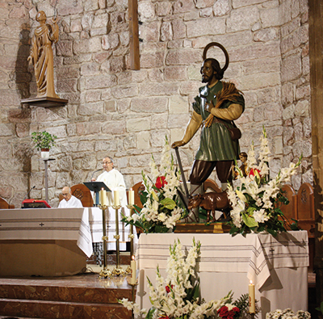

San Isidro, labradorPor parte de Luis Pérez Simón, FranciscanoEl próximo día 15 de mayo celebraremos la fiesta de San Isidro, labrador, madrileño, nacido hacia finales del siglo XI, patrono del campo español. En Alcázar es fiesta local. El fervor del pueblo rodea la figura del Santo con romería a su ermita, bien cuidada y ornamentada los últimos años, para favorecer el acceso a ella, donde se ora, se disfruta y se pasa una jornada divertida, con entretenimientos diversos. El Santo ha sido honrado tradicionalmente con diversos festejos: procesiones, romerías, verbenas, ferias y actos religiosos. En nuestro pueblo, la Hermandad de San Isidro mantiene y promueve todas estas cosas, preparando la fiesta con un triduo en la iglesia de San Francisco, de donde sale la romería hasta la ermita.  San Isidro fue un trabajador del campo, sencillo y humilde, que supo unir el esfuerzo humano con la fe y la esperanza en la providencia divina. Hombre piadoso que madrugaba para buscar la protección de Dios en su quehacer diario, yendo de madrugada a la iglesia (¡costumbre de los labradores castellanos hasta no hace tanto tiempo!). Por causa de sus rezos fue envidiosamente acusado y criticado por algunos de sus compañeros ante su patrono: “¡Reza mucho, pero trabaja poco!”. Por eso, ¡eran los ángeles los que araban! Se le atribuyó la dota de descubrir corrientes de agua, lo que explica su relación con el agua: el pozo, la fuente del Santo en la madrileña pradera del Manzanares, el milagro de salvar a su hijo caído en el pozo… Es un reconocimiento a la evidente necesidad del agua para el campo. Sentir bien distinto al que no hace tantos años se quiso imponer bajo la concepción progresista de que “el agua no caía del cielo”, por lo que no haría falta rezar a Dios ni pedirle la lluvia ni hacer rogativas… Parece que el buen sentido de la gente sencilla mantiene la costumbre y devoción popular –la fe- en que también el agua es don del cielo. Para los creyentes, la fiesta del Santo nos recuerda: “Mirad: el labrador aguarda el fruto precioso de la tierra, esperando con paciencia hasta que recibe la lluvia temprana y tardía… Elías rezó insistentemente para que no lloviera, y no llovió sobre la tierra durante tres años y seis meses. Volvió a rezar, y el cielo dio la lluvia y la tierra produjo su fruto” (Sant 5, 7.17-18). Nos inculca la espera paciente y activa. “Como el sarmiento no puede dar fruto por sí, si no permanece en la vid, así tampoco vosotros, si no permanecéis en mí. Yo soy la vid, vosotros los sarmientos” (Jn 15, 4-5). La fe y el amor nos unen a Cristo. La unión de los creyentes a Cristo es fruto del amor. La vida y el ejemplo de los Santos nos enseñan y ayudan a trascender lo inmediato y a pensar y confiar en Dios y su amor a nosotros. |
 Revista San Isidro 2015  Revista San Isidro 2015 |
BREVE HISTORIA AGRÍCOLA Y GANADERA (2ª Parte)
En el Priorato de San Juan se tenía costumbre de prestar a los agricultores un tercio de los diezmos para la siembra.
En el Libro de Cuentas 1612-1628 folio 90 nos encontramos la siguiente reseña:
“Mas doce reales que pagó a Diego García de Siruela, vecino desta villa, ...
En el Priorato de San Juan se tenía costumbre de prestar a los agricultores un tercio de los diezmos para la siembra.
En el Libro de Cuentas 1612-1628 folio 90 nos encontramos la siguiente reseña:
“Mas doce reales que pagó a Diego García de Siruela, vecino desta villa, ...

EL HISTORIAL CAMPESINO
Fácil es señor doctor,
decir no bebas más vino
y que difícil que es
para el que nació campesino.
Yo que desde muy pequeño
dediqué mi vida entera
y en darle puse mi empeño,
rango, prestigio y solera..
Fácil es señor doctor,
decir no bebas más vino
y que difícil que es
para el que nació campesino.
Yo que desde muy pequeño
dediqué mi vida entera
y en darle puse mi empeño,
rango, prestigio y solera..
ALGUNOS MILAGROS DE SAN ISIDRO
No todos sabrán de la gran cantidad de milagros que se le atribuyen a San Isidro Labrador, muchos de ellos, post mortem. Cuatrocientos treinta y ocho milagros en total, de los cuales vamos a contar aquí los más conocidos.
No todos sabrán de la gran cantidad de milagros que se le atribuyen a San Isidro Labrador, muchos de ellos, post mortem. Cuatrocientos treinta y ocho milagros en total, de los cuales vamos a contar aquí los más conocidos.
SOLAMENTE HACE 50 AÑOS ...
Tuvo lugar una catástrofe climatológica en toda la zona de La Mancha. Un gran frente frío cruzó toda la Península dejando fuertes heladas y copiosas nevadas que hizo que durante varios días la nieve se quedara congelada sobre todos los cultivos de la zona.
En esos días, concretamente durante los días del 19 al 22 de Febrero de 1.965 ...
Tuvo lugar una catástrofe climatológica en toda la zona de La Mancha. Un gran frente frío cruzó toda la Península dejando fuertes heladas y copiosas nevadas que hizo que durante varios días la nieve se quedara congelada sobre todos los cultivos de la zona.
En esos días, concretamente durante los días del 19 al 22 de Febrero de 1.965 ...
Conoce el reglamento interno, los requisitos de acceso y pasa a formar parte de nuestra Hermandad.

| Teléfono: 654 53 82 29 (Jesús) Casa Parroquial de la Iglesia de San Francisco Plaza de San Francisco, s/n 13600 - Alcázar de San Juan (Ciudad Real) |
Síguenos en |